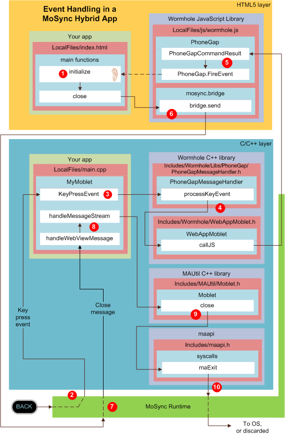

Event Handling in a MoSync Hybrid Mobile App
A unique feature of the MoSync SDK is its ability to handle hybrid mobile apps: Mobile applications that mix HTML5, JavaScript and C/C++. In this overview we look at the event handling architecture of a hybrid app, with a particular focus on the Wormhole Libraries' handling of events and messages between the HTML5 and C/C++ layers of your app, and the MoSync Runtime on the device.
Processing Flow for an Event
In the following flowchart we show a high-level view of the processing of an event in a running hybrid app. The event is the pressing of the BACK key on the device. In the flowchart we show the default processing in a standard MoSync SDK template; the template we have chosen is the MoSync HTML5/JS/C++ Hybrid Project template which includes event handling in both HTML5/JavaScript and in C/C++, and well illustrates the roles played by both the Wormhole JavaScript Library and Wormhole C++ Library.

Call Sequence
When the body of your application's web page loads, the JavaScript initialize function in the page's head section gets called. That function sets up a listener for "backbutton" events. Later, when that listener hears such an event, it will call the close function:
function initialize() {
document.addEventListener("backbutton", close, true);
}
function close() {
mosync.bridge.send([ "close" ]);
}
The "backbutton" event is actually a custom event type that's defined in the Wormhole JavaScript Library, extending the standard event listening functionality of HTML5.
In the running app, when the MoSync Runtime code on the device detects (via the device's operating system) that a key has been pressed, it calls the generic handler for events within your app's C++ moblet, passing along the key codes that identify the key that has been pressed.
(A moblet is an object that represents a MoSync application in the C++ world. For more about moblets, see its C++ class reference, the HelloMoblet example application, our tutorials HelloWorld, Deconstructed and Starting a New Moblet Project, or Mikael Kindborg's excellent Developing mobile apps in MoSync - designing classes for code reuse.)
You can use the KeyPressEvent within your application's implementation of the WebAppMoblet (i.e., within MyMoblet) to specify special handling for different keys. The WebAppMoblet is the base class for any MoSync application that uses NativeUI WebView widgets. It inherits from MAUtil::Moblet, the base C++ class for all MoSync applications.
The WebAppMoblet adds functionality to the basic Moblet class that enables it to interact with WebView widgets. For example it adds the callJS method that can be used to run JavaScript code in the WebView, and the handleWebViewMessage method that deals with messages coming from the WebView.
In your implementation of the Moblet class you can override these and other methods inherited from Moblet and WebViewMoblet. For more information, see Extending HTML5 Apps with C++.
In the default MoSync HTML5/JS/C++hybrid template, the key codes in the KeyPressEvent are simply forwarded to the PhoneGapMessageHandler which is part of the MoSync Wormhole C++ Library. (As the Wormhole C++ Library is precompiled, you can't see its source in the IDE. If you want to look at the library code you can find it in the MoSync Project Repository on GitHub.)
The processKeyEvent method of the PhoneGapMessageHandler checks the key codes sent from the moblet and, if it is the code for the back key, it uses the callJS method to call a JavaScript function in the HTML5 layer of the app:
void PhoneGapMessageHandler::processKeyEvent(int keyCode, int nativeKeyCode)
{
if (MAK_BACK == keyCode)
{
callJS("PhoneGapCommandResult('backbutton');");
}
}
void WebAppMoblet::callJS(const MAUtil::String& script)
{
getWebView()->callJS(script);
}
Note that the key code has now been replaced by a status string "backbutton".
The called function is PhoneGapCommandResult which is a function in the MoSync Wormhole JavaScript Library. You can find this library in the LocalFiles/js folder in your application project.
In the default hybrid template, the function checks to see if the status string is "backbutton", and if so calls a PhoneGap function called fireEvent. The fireEvent function creates an event and dispatches it to the HTML document object (i.e. your web page) where it will be detected by the listener for that event type that was set up in step 1.
The "close" message string is handled by the MoSync Bridge, a part of the Wormhole JavaScript Library. The Bridge sends the "close" message to the MoSync Runtime code on the device.
The MoSync Runtime now sends a "close" message to the application moblet where it is dealt with, first by the moblet's generic handleWebViewMessage method, then by the specific handleMessageStream method.
In the default hybrid template, the standard moblet close method is now called. Again the source code for moblets is in a precompiled library (in this case MAUtil), but you can find it in GitHub if you need it.
 The moblet closes the app by invoking the MoSync syscall function maExit in the MoSync Runtime. (For documentation of this syscall, and all other MoSync syscalls and IOCTLs, see its entry in maapi.h.)
The moblet closes the app by invoking the MoSync syscall function maExit in the MoSync Runtime. (For documentation of this syscall, and all other MoSync syscalls and IOCTLs, see its entry in maapi.h.)
Finally the MoSync Runtime instructs the device's OS to close the app (for example, on Android) or, on platforms that do not allow an app to close itself (for example, on iOS or Windows Phone 7), simply discards the instruction.